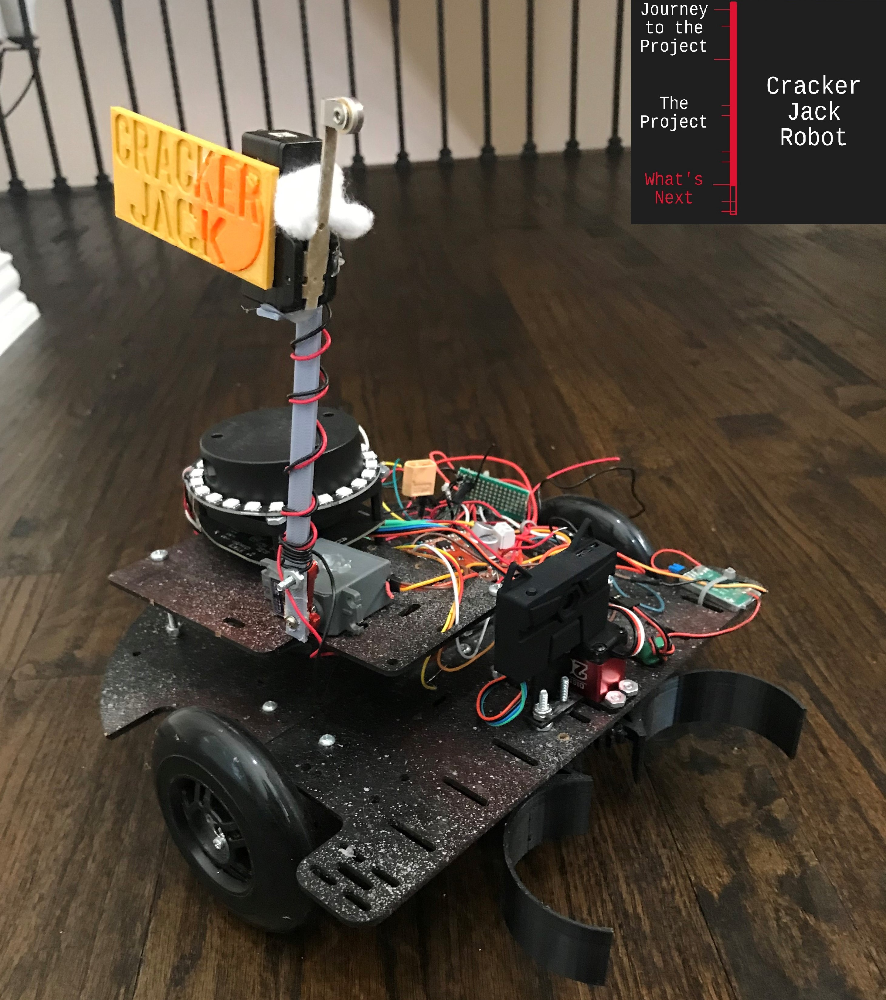

CrackerJack Robot

In my pursuit of robotics, I participated in the Dallas Personal Robotics Group (DPRG) competition, specifically the Six Can Challenge. This competition required navigating an arena with walls and two gates, with the goal of autonomously moving six randomly placed orange cans through the gate opposite to the robot's starting point.
In my initial attempt, despite limited development time, I implemented a strategy involving two ultrasonic sensors on the right, two on the front, a front-facing camera, and a gripper. The robot used the camera to locate and grab the cans based on the color, then executed a sequence involving orientation detection using a green board I placed on the right wall, backing up to the middle of the arena using ultrasonic sensors, and aligning itself with the goal gate for and would move toward the gate until a switch on top of the robot made contact with a post over the gate. This effort secured a third place in the competition.
For my subsequent attempt at the "Six Cans" challenge, I refined the robot's design by replacing the ultrasonic sensors with an RP Lidar sensor and incorporating an LED ring to visualize the lidar sensor's observations during runtime. Additionally, I made improvements to the switch mechanism by attaching it to a servo, allowing it to be out of the lidar sensor's way when not needed. The robot adopted a new approach to monitor its orientation by observing the right wall using the RP Lidar sensor as it moved. It would grab a can, navigate to the middle of the arena, turn towards the goal, raise the switch using the servo, and move toward the goal until the switch detected contact with the goal pole. Despite facing challenges related to the arena's corners affecting lidar sensor readings, this enhanced version showcased my adaptability and problem-solving skills in response to real-world robotic navigation complexities.
These experiences underscore my commitment to continuous improvement in robotics and programming, emphasizing not only technical expertise but also a strategic and adaptive approach to problem-solving in dynamic competition scenarios. The lessons learned from these competitions contribute to my evolving skill set and drive to push the boundaries of autonomous robotics.